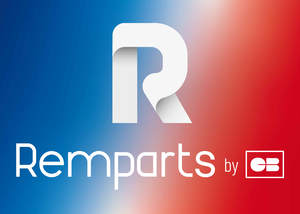

Trade Mark Journal No.2025/010 7 March 2025
UK00004163798 21 February 2025 (9,37,38,42)

International priority date claimed: 28 October 2024
(France)
(5093711)
- Class 9
- Software, Computer software and computer hardware (recorded and/or downloadable) to facilitate and administer authentication services, routing, transaction authorization and settlement, fraud detection and control services, IT troubleshooting and encryption ; hardware and software to facilitate electronic payment transactions over wireless networks, global computer networks and/or mobile telecommunication devices mobile ; encryption hardware and software, encryption keys, digital certificates, digital signatures, software for tamper-proof data storage, recovery and transmission of confidential information ; authentication software for access control and communication with computers and networks ; authentication software for controlling financial transactions on the internet ; software for processing electronic payments and money transfers over the internet ; software for processing electronic payments and transferring funds to and from third parties ; encryption hardware and software, encryption keys, digital certificates, digital signatures applied to monetary and financial transactions ; software for tamper-proof data storage, recovery and transmission of confidential customer information used by individuals and monetary, banking and financial institutions ; computer software for automating an identity authentication process through existing databases in connection with the issuance and management of digital certificates used for authentication or encryption of digital communications or authentication of a digital signature in monetary and financial transactions over the Internet and other computer networks.
- Class 37
- Installation, maintenance, monitoring and repair of software and computer programs, hardware and software (recorded and/or downloadable) to facilitate and administer transaction authentication, routing, authorization and settlement services, fraud detection and control services fraud detection and control, IT troubleshooting and encryption services, computer hardware and software to facilitate electronic payment transactions over wireless networks, global computer networks and/or mobile telecommunications devices, encryption hardware and software encryption hardware and software, encryption keys, digital certificates, digital signatures, software for tamper-proof data storage, recovery and transmission of confidential transmission of confidential information, authentication software for access control and communication with computers and computer networks, authentication software for the control of financial transactions on the Internet, software for processing electronic payments and transfer of funds over the internet, software for processing electronic payments and the transfer of funds to and from third parties, hardware and software for encryption, encryption keys, digital certificates, digital signatures applied to monetary and financial transactions, software for tamper-proof data storage, recovery and transmission of confidential the retrieval and transmission of confidential customer information used by monetary, banking monetary, banking and financial institutions, computer software for the automation of a business process the automation of an identity authentication process using existing databases relating to the issue and management of digital certificates used for authentication or encryption of the authentication or encryption of digital communications or the authentication of a digital signature digital signature in monetary and financial transactions over the Internet and other computer networks.
- Class 38
- Telecommunications service, Internet access, transmission and exchange of data and information via computer terminals, by electronic means for banking and financial and financial services ; provision of access to data on the Internet, provision of access to data transmission networks, electronic mail services for the banking and financial sectors; services for the electronic transmission of credit card transaction data and electronic payment data via a global computer network ; rental of access time to a computerised database ; provision of multi-user access to a secure computer information network for the transfer and distribution of information in the field of banking and financial services ; provision of access to an online network enabling users to transfer personal identity data and share personal identity data between several websites as part of the settlement of monetary and financial transactions ; services for the distribution of video, text and audio data via computers or other communication networks, i.e. uploading, posting, displaying, referencing and electronic transmission of data, information, audio data and video images ; electronic transmission of bill payment data for users of computer and communication networks ; secure electronic transmission of data for payment services and financial transactions via a global computer network ; providing access to online electronic databases via a global IT network for authentication and verification, payment cards, fraud and risk management and banking services.
- Class 42
- Engineering service, Software design and development, programs computer services, financial transaction authentication services, i.e. services for registering and issuing approvals for bankcards, software embedded in bankcards, bankcard payment terminals and systems, and production sites for these cards with regard to their operation and security features ; computer and software design and development ; designing of data processing systems ; design and development of electronic data security systems ; design and development of computers and software for new payment systems ; temporary provision of non-downloadable online software for processing electronic payments; temporary provision of non-downloadable online authentication software for controlling access to computers and computer networks and for controlling communications between computers and computer networks in the context of monetary and financial transactions; digital signature authentication services for third parties, i.e. encryption and data integrity ; supply of encrypted, authenticated and digitally signed data to third parties for the issue and validation of digital certificates in the field of authentication (IT security services); verification, authentication, issue, distribution and management of digital certificates (IT security services) .
GROUPEMENT DES CARTES BANCAIRES
Representative: MIIP - MADE IN IP